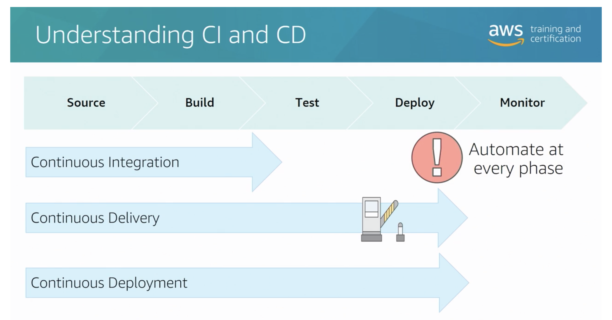
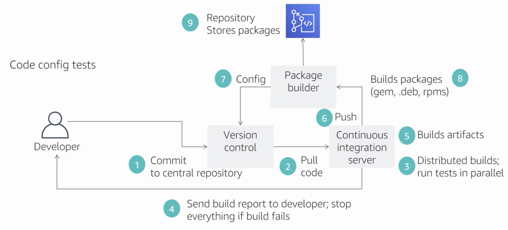

Home
SDLC Automation
Software Development Lifecycle Automation
Certification Objectives
- Apply concepts required to automate CI/CD pipeline
- Determine source control strategies and how to implement them
- Apply concepts required to automate and integrate testing
- Apply concepts to build and manage artifacts securely
- Determine deployment delivery strategies (eg A/B, Blue/green, Canary, Red/black) and how to implement them using AWS services
Application Lifecycle Management
The difference between continuous delivery and continuous deployment is continuous delivery has a manual step to release.

Continuous Integration Goals
- Automatically kick of a new release when code is checked in
- Build and test code in a consistent, repeatable environment
- Continually have an artifact ready for deployment
- Continually close feedback loop when build fails
Continuous Delivery Goals
- Automatically deploy new changes to staging environments for testing
- Deploy to production safely without impacting customers
- Deliver to customers faster: Increase deployment frequency, and reduce change lead time and change failure rate
In summary we want to be quick, safe and automated

Immutable Infrastructure
Developer finds and issue from project management server
Developer writes code to solve issue
Developer commits code to repository
- a. Developer schedules a job
- b. Or repo triggers continuous integration server to retrieve code from repository
Notification sent to the project management server updating ticket status
Continuous integration server might output:
- a. Binary for the next environment
- b. Documentation